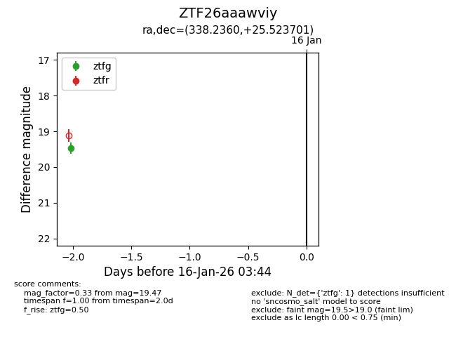
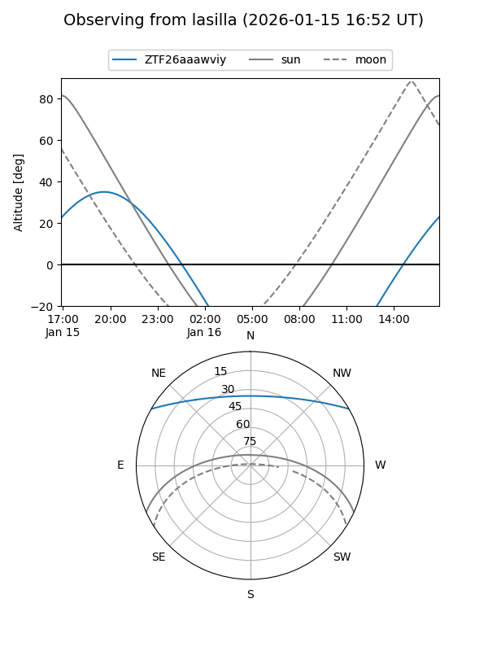
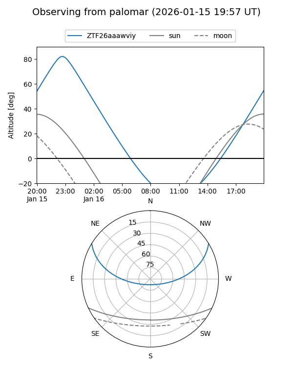

ZTF26aaawviy
Target ZTF26aaawviy at 2026-01-14 03:35
Aliases and brokers:
FINK: link
Lasair: link
ALeRCE: link
alt names
ZTF26aaawviy (ztf,fink_ztf)
Coordinates:
equatorial (ra, dec) = 338.2360,+25.52370
equatorial (HMS+DMS) = 22:32:56.63,+25:31:25.32
galactic (l, b) = (87.5548,-27.67290)
Flags:
Photometry:
last ztfg=19.47
1 ztfg detections
Lightcurve

Visibility


Additional plots